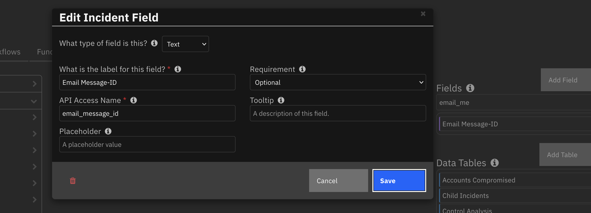
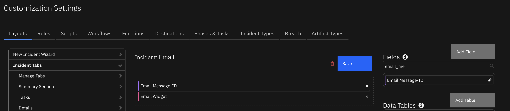
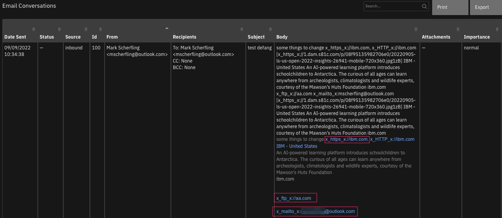

IBM SOAR example email message parsing script#
This package consists of the RuleAndScript.res and ScriptAlone.res IBM SOAR configuration files. The first file contains an example email parsing script and a rule to run it automatically. The ScriptAlone.res file contains the script without the rule.
History#
Version |
Date |
Comments |
|---|---|---|
2.3.2 |
2/2023 |
Fix index error |
2.3.1 |
10/2022 |
Fix for defanging logic |
2.3.0 |
9/2022 |
Support for Outbound Email 2.0 conversations |
2.2.0 |
7/2021 |
Support for Python 3 |
2.0.2 |
4/2020 |
Bug fixes for phishing incident type |
2.0.1 |
10/2019 |
Fix when email address contains unicode characters |
2.0.0 |
7/2019 |
Unicode bug fixes |
1.0.1 |
2/2019 |
Added automatic rule for script execution |
1.0.0 |
1/2019 |
Initial release |
Changes for v2.3.0#
Version of the 2.3.0 of the parsing script introduces the ability to capture an email’s Message-ID header. This value will be used to create email conversations based on the case’s incoming email.
Version 2.0.0 of Outbound Email will import a custom incident field (email_message_id) for retention of this information, along with new functionality to create outbound email conversations.
If you want to use this parsing script without the fn_outbound_email app, you can manually create the incident field email_message_id and add it to a case tab, such as Email.
The below images show the creation of the email_message_id custom field and its assignment to a tab. The script will continue to execute if this field is absent.
 
Also in Outbound Email 2.0, a datatable is introduced to capture email conversations:
Type |
API Name |
|---|---|
Datatable |
email_conversations |
This datatable is used to capture email conversation information for both inbound and outbound messages within an incident. If you’re not using Outbound Email 2.0 or greater, this generic email script will continue to work without this datatable.
If you are using Outbound Email 2.0 or greater, you can edit this script to enable the logic to populate the inbound email message into the incident’s Email Conversations datatable. Modify line 10, SAVE_CONVERSATION = True, to perform this action
## Uncomment if you're using Outbound EMail 2.0 or greater and want to capture the inbound email in the Email Conversation datatable
#processor.add_email_conversation(emailmessage.headers, processor.emailContents, [attachment.suggested_filename for attachment in emailmessage.attachments])
Be aware that any url, mailto email address, url etc. is modified so that it is no longer clickable. This is done to reduce the possibility of clicking on a malicious link (such as in a phishing email). See the image below for an altered email representation.

Installation instructions#
Before installing, verify that your environment meets the following prerequisites:
IBM SOAR platform is version 39 or later.
You have a IBM SOAR account to use for the installation. This can be any account that has the permission to view and modify administrator and customization settings, and read and update incidents. You need to know the account username and password.
Procedure#
Important: Repeatedly importing the .res files will overwrite any changes you have made to the script and rule.
Log on to the IBM SOAR platform using a suitable account.
Navigate to Administrator Settings.
Select the Organization tab.
Select the Import link.
Select the + Import settings button.
If you are upgrading from a previous version of this package, select the ScriptAlone.res file from the installation bundle. Otherwise, choose the RuleAndScript.res file.
Select Open.
Select Proceed.
Result#
After installing from RuleAndScript.res, the IBM SOAR platform will have a new Python script called “Generic email script v2.3.0” and a new rule called “Process email message v2.3.0”. The rule runs the script when it is triggered by a new email message being received by the IBM SOAR platform. If instead you imported ScriptAlone.res then you will only have the new script and not the rule.
Note: This new rule is disabled by default. To enable:
Navigate to Customization Settings.
Select the “Rules” tab.
Modify the “Generic email script v2.3.0” with any custom Allowlist IP address changes
Enable the rule “Process email message v2.3.0”. If you are using an older email script:
Disable any previous email rule this new script is replacing.
Operation#
The script is intended to perform generic email parsing on newly created email message objects. It performs the following:
Checks if an existing incident exists whose title reflects the email message received.
If so, it associates the email message with the existing incident.
If not, it:
Creates a new incident with a suitable title.
Associates the email message with the new incident.
Adds the email message’s subject as an artifact to the new incident.
Sets the incident’s reporter field to be the email address that sent the message.
Parses the email body text looking for URLs, IP addresses and file hashes. After filtering out invalid and allowlisted values, it adds the remaining data to the incident as artifacts.
Adds non-inline email message attachments to the incident.
NOTE: If you installed the previous version of this script, be aware that the previous rules and scripts are not replaced. Therefore, if you import RuleAndScript.res you could have multiple rules that are triggered by the creation of an email message. In this case, you may want to review your rules and remove those whose conditions overlap.
An email message can only be associated with one incident. If two scripts run on email message creation, and each script associates the email message with a different incident, then neither script will appear to have an effect and the email message will appear in the IBM SOAR Inbox tab.
Configuration#
The incident owner#
New incidents need an owner, either an individual identified by their email address or a group name. In the provided script, every incident is owned by the user admin@co3sys.com. This should be changed to reflect your IBM SOAR platform. For example, to change the owner to l1@businessname.com, locate line 25 of the script:
# The new incident owner - the email address of a user or the name of a group and cannot be blank.
# Change this value to reflect who will be the owner of the incident before running the script.
newIncidentOwner = ""
Edit the line:
# The new incident owner - the email address of a user or the name of a group and cannot be blank.
# Change this value to reflect who will be the owner of the incident before running the script.
newIncidentOwner = "l1@businessname.com"
Allowlisting#
A allowlists is a list of trustworthy data items that should not become suspicious artifacts, for example your own email server’s IP address. There are two categories of allowlist used in the script: IP address and URL domain. These allowlists are configured by altering data in the script.
Variable Name |
Line number |
Purpose |
|---|---|---|
|
23 |
IP v4 allowlist |
|
42 |
IP v6 allowlist |
|
63 |
URL domain allowlist |
Initially these allowlists are comprised of commented out entries which serve as examples of the data you might want to exclude from consideration. The allowlists will have no effect unless you uncomment the entries and make a grammatically correct list, or add some entries of your own. Please note that, compared to version v1 of the script, the allowlist variable location has changed and formats of the entries have been simplified.
IP address allowlists#
The IP address allowlists are divided into separate IPv4 and IPv6 lists. These lists apply to the IP addresses retrieved by pattern matching in the body of the email message. If an IP address appears on a allowlist, it is not added as an artifact to the incident.
There are two categories of IP allowlist entry, CIDR (Classless Inter-Domain Routing) and IPRange. For example, in IP V4, IBM owns the 9 class A network. You may want to also allowlist an IP range, such as 12.0.0.1 - 12.5.5.5. To add these criteria to the allowlist you would add the following to ipV4AllowList:
"9.0.0.0/8",
"12.0.0.1-12.5.5.5"
You may also want to allowlist an explicit IP address, such as 13.13.13.13. This would be specified by:
"13.13.13.13"
IP v6 allowlists operate similarly. For example to allowlist a V6 CIDR aaaa::/16 you would add CIDR("aaaa::/16") to ipV6AllowList. For example:
# Allowlist for IP V4 addresses
ipV4AllowList = AllowList([
...
])
# Allowlist for IP V6 addresses
ipV6AllowList = AllowList([
...
])
should become:
# Allowlist for IP V4 addresses
ipV4AllowList = AllowList([
"9.0.0.0/8",
"12.0.0.1-12.5.5.5",
"13.13.13.13"
])
# Allowlist for IP V6 addresses
ipV6AllowList = AllowList([
"aaaa::/16"
])
URL domain allowlists#
The domain allowlist applies to URLs found in the body of the email. If a allowlisted domain is discovered in a potential URL artifact, then it is not added to the incident. Domains can be added explicitly, such as mail.businessname.com, or using a wildcard, such as *.otherbusinessname.com. For example:
# Domain allowlist
domainAllowList = [
#"*.ibm.com"
]
would become:
# Domain allowlist
domainAllowList = AllowList([
"mail.businessname.com",
"*.otherbusinessname.com"
])
Please note that the allowlist entries *.otherbusinessname.com and otherbusinessname.com have the same effect of allowlisting any address in the otherbusinessname.com domain.
Extension and Customization#
Please refer to the IBM SOAR Incident Response Platform Playbook Designer Guide for details on writing and customizing scripts. This guide is available from the Help/Contact menu in the IBM SOAR platform.
There are two approaches to customization of the mechanism:
Running multiple scripts for the same email
Modifying the supplied script
For a variety of reasons, adding more scripts is generally a better idea than adding more complexity to one script. The IBM SOAR platform could be expected to ingest multiple categories of email messages from different integrations. Some of the processing of the email messages could be common, and some processing could be category- or integration-specific. Keeping the common processing in one script, and the specialized processing in others would allow a cleaner and more maintainable implementation.
Examples#
Extending the solution to deal with Phishing reports#
Scenario: Emails arriving in a particular mailbox reflect individuals forwarding suspected phishing messages. The scripts operating on these email messages should, in addition to the generic processing, record the reporter’s email address as possibly having been the target of a phishing attack, and record the sender of the forwarded phishing email as suspicious.
A solution: Add the following script to the IBM SOAR platform:
import re
def addArtifact(regex, artifactType, description):
"""This method adds new artifacts to the incident derived from matches of the the regular expression
parameter within the email body contents.
Parameter "regex" - a regular expression to match against the email body contents.
Parameter "artifactType" - the type of the artifact(s).
Parameter "description" - the description of the artifact(s).
"""
dataList = set(re.findall(regex, emailmessage.body.content)) # Using a set to enforce uniqueness
if dataList is not None and len(dataList) > 0 :
map(lambda theArtifact: incident.addArtifact(artifactType, theArtifact, description), dataList)
###
# Mainline starts here
###
# Add "Phishing" as an incident type for the associated incident
incident.incident_type_ids.append("Phishing")
# Add the email sender information to the incident as the recipient of the phishing attempt
reportingUserInfo = emailmessage.from.address
if emailmessage.from.name is not None:
reportingUserInfo = u"{0} <{1}>".format(emailmessage.from.name, emailmessage.from.address)
incident.addArtifact("Email Recipient", reportingUserInfo, "Recipient of suspicious email")
# Extract email sender information on the assumption that a phishing email is being forwarded
if not emailmessage.body.content is None:
addArtifact(r"From: (.*)\n", "Email Sender", "Suspicious email sender")
addArtifact(r"Reply-To: (.*)\n", "Email Sender", "Suspicious email sender (Reply-To)")
Run the script as part of a rule that includes a condition that helps identify the email message as a phishing report. The script should run either as part of a multi-script rule that first runs the generic script, or as a separate rule that runs afterwards. It is important that the phishing-specific script should run after the generic script because the generic script causes the incident variable to be set, and the phishing-specific script shown above expects this to have been done already.
NOTE: If you choose to implement the solution as one script, not two, then be sure that you add the Phishing incident type to the incident at a point in the script when the incident object exists. For example, the following command should occur after the incident is created or found.
incident.incident_type_ids.append("Phishing")
Campaign identifier#
Scenario: The email message subject on its own might not be enough to collect related email messages into one incident. It may be that the email message subject is not specific or reliable enough to use as the way to collect related emails. In particular, there may be an attack taking place where multiple attack vectors are being employed in a single campaign, which may result in many different kinds of email messages being received for this one campaign. One solution to the problem is to create a new field in an incident to contain a campaign identifier. This identifier could be either derived from the email message contents, or chosen from a hard-coded list when the campaign is recognized by the parsing script.
A solution:
Create a new incident custom field for the campaign identifier of type Text.
Copy the generic parsing script into a new script.
Modify the new script to create a value for the campaign identifier either by selecting some text from the email message contents, or selecting from a hard-coded list of campaign identifiers if certain criteria are met.
To associate the email message with a relevant existing incident, search for incidents whose campaign identifier field is the same as the campaign identifier value for the email message. This would replace the search based on email message subject.
If no suitable incident is found, create a new incident and set its campaign identifier field to be the campaign identifier value.
Modify the rules so that the new script runs instead of the generic script.